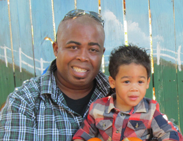

I love to dabble in a little bit of everything from Web and Graphic Design to Videography and Photography to Animation and Drawing.
I offer several services including Company Branding, Consulting and Video Editing.
I am a simple man with simple ideas. I love my family, my friends, life and most of all creating something out of nothing. I have been a freelance Graphic/Web Designer since 2002. I try to dabble in as many areas of Multimedia that I can. I am currently in my final year at Devry University for a B.A. in Multimedia Design and Development.
I am currently working on various projects the one I love the most is a 3D animation film based on my 3 year old son.
For a closer look at my resume and skills, click here
I offer several services including Company Branding, Consulting and Video Editing.
I am a simple man with simple ideas. I love my family, my friends, life and most of all creating something out of nothing. I have been a freelance Graphic/Web Designer since 2002. I try to dabble in as many areas of Multimedia that I can. I am currently in my final year at Devry University for a B.A. in Multimedia Design and Development.
I am currently working on various projects the one I love the most is a 3D animation film based on my 3 year old son.
For a closer look at my resume and skills, click here